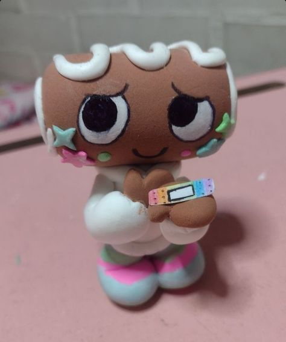
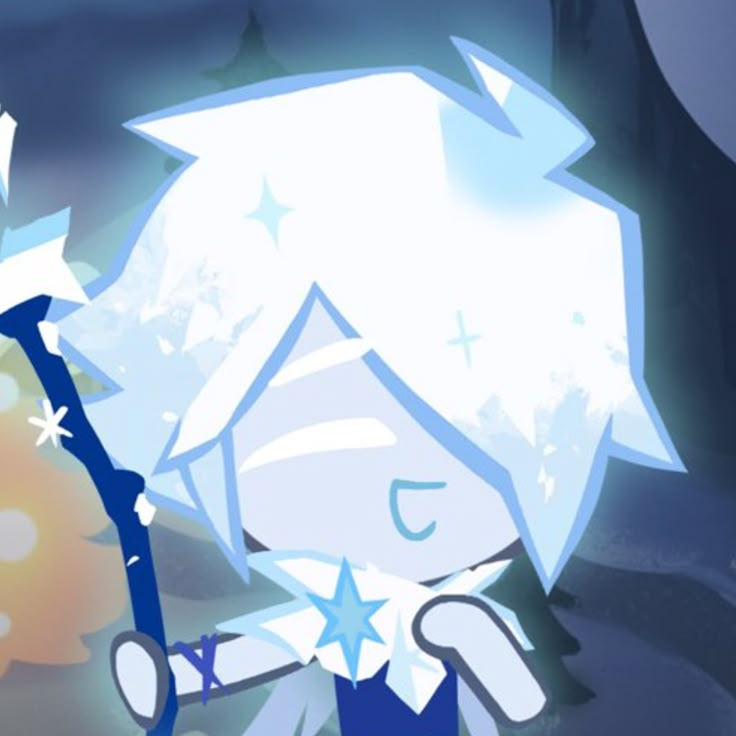

Hobbies
These are my hobbies!

𝙁𝙤𝙧 𝙨𝙩𝙖𝙧𝙩𝙚𝙧𝙨, 𝙄 𝙡𝙤𝙫𝙚 𝙥𝙡𝙖𝙮𝙞𝙣𝙜 𝙜𝙖𝙢𝙚𝙨! 𝙂𝙖𝙢𝙞𝙣𝙜 𝙞𝙨 𝙤𝙣𝙚 𝙤𝙛 𝙢𝙮 𝙥𝙧𝙞𝙢𝙖𝙧𝙮 𝙝𝙤𝙗𝙗𝙞𝙚𝙨, 𝙖 𝙣𝙞𝙘𝙚 𝙩𝙞𝙢𝙚 𝙛𝙞𝙡𝙡𝙚𝙧, 𝙚𝙨𝙥𝙚𝙘𝙞𝙖𝙡𝙡𝙮 𝙬𝙝𝙚𝙣 𝙄'𝙢 𝙛𝙚𝙚𝙡𝙞𝙣𝙜 𝙗𝙤𝙧𝙚𝙙 𝙤𝙧 𝙟𝙪𝙨𝙩 𝙞𝙣 𝙩𝙝𝙚 𝙢𝙤𝙤𝙙 𝙛𝙤𝙧 𝙚𝙣𝙩𝙚𝙧𝙩𝙖𝙞𝙣𝙢𝙚𝙣𝙩. 𝙄 𝙚𝙣𝙟𝙤𝙮 𝙩𝙞𝙩𝙡𝙚𝙨 𝙡𝙞𝙠𝙚 𝙍𝙤𝙗𝙡𝙤𝙭, 𝙈𝙞𝙣𝙚𝙘𝙧𝙖𝙛𝙩, 𝘾𝙤𝙤𝙠𝙞𝙚 𝙍𝙪𝙣: 𝙆𝙞𝙣𝙜𝙙𝙤𝙢, 𝙏𝙨𝙪𝙠𝙞 𝙊𝙙𝙮𝙨𝙨𝙚𝙮, 𝙍𝙚𝙨𝙤𝙣𝙖𝙣𝙘𝙚 𝙤𝙛 𝙩𝙝𝙚 𝙊𝙘𝙚𝙖𝙣, 𝙖𝙣𝙙 𝙢𝙖𝙣𝙮 𝙤𝙩𝙝𝙚𝙧 𝙬𝙖𝙘𝙠𝙮 𝙜𝙖𝙢𝙚𝙨. 𝘼 𝙨𝙞𝙜𝙣𝙞𝙛𝙞𝙘𝙖𝙣𝙩 𝙥𝙤𝙧𝙩𝙞𝙤𝙣 𝙤𝙛 𝙢𝙮 𝙜𝙖𝙢𝙞𝙣𝙜 𝙩𝙞𝙢𝙚 𝙞𝙨 𝙨𝙥𝙚𝙣𝙩 𝙤𝙣 𝙍𝙤𝙗𝙡𝙤𝙭, 𝙬𝙝𝙚𝙧𝙚 𝙄 𝙥𝙡𝙖𝙮 𝙜𝙖𝙢𝙚𝙨 𝙡𝙞𝙠𝙚 𝙋𝙞𝙡𝙡𝙖𝙧 𝘾𝙝𝙖𝙨𝙚 2, 𝙁𝙤𝙧𝙨𝙖𝙠𝙚𝙣, 𝘿𝙬, 𝙕𝙤𝙢𝙗𝙞𝙚 𝙐𝙥𝙧𝙞𝙨𝙞𝙣𝙜, 𝙖𝙣𝙙 𝙢𝙖𝙣𝙮 𝙢𝙤𝙧𝙚!
𝙈𝙤𝙧𝙚𝙤𝙫𝙚𝙧, 𝙄 𝙝𝙖𝙫𝙚 𝙧𝙚𝙘𝙚𝙣𝙩𝙡𝙮 𝙙𝙚𝙫𝙚𝙡𝙤𝙥𝙚𝙙 𝙖 𝙥𝙖𝙨𝙨𝙞𝙤𝙣 𝙛𝙤𝙧 𝙘𝙤𝙡𝙡𝙚𝙘𝙩𝙞𝙣𝙜 𝙢𝙚𝙧𝙘𝙝𝙖𝙣𝙙𝙞𝙨𝙚 𝙤𝙛 𝙢𝙮 𝙛𝙖𝙫𝙤𝙧𝙞𝙩𝙚 𝙘𝙝𝙖𝙧𝙖𝙘𝙩𝙚𝙧𝙨 𝙛𝙧𝙤𝙢 𝙫𝙖𝙧𝙞𝙤𝙪𝙨 𝙥𝙞𝙚𝙘𝙚𝙨 𝙤𝙛 𝙢𝙚𝙙𝙞𝙖 𝙖𝙨 𝙖 𝙨𝙞𝙡𝙡𝙮 𝙡𝙞𝙩𝙩𝙡𝙚 𝙝𝙤𝙗𝙗𝙮. 𝙄 𝙪𝙨𝙪𝙖𝙡𝙡𝙮 𝙨𝙝𝙤𝙬𝙘𝙖𝙨𝙚 𝙩𝙝𝙚𝙨𝙚 𝙘𝙤𝙡𝙡𝙚𝙘𝙩𝙞𝙗𝙡𝙚𝙨 𝙞𝙣 𝙢𝙮 𝙧𝙤𝙤𝙢, 𝙤𝙣 𝙢𝙮 𝙗𝙖𝙜𝙨, 𝙖𝙣𝙙 𝙧𝙚𝙖𝙡𝙡𝙮 𝙖𝙣𝙮𝙩𝙝𝙞𝙣𝙜 𝙄 𝙤𝙬𝙣.
𝙇𝙖𝙨𝙩𝙡𝙮, 𝙄 𝙡𝙞𝙠𝙚 𝙩𝙤 𝘿𝙧𝙖𝙬, 𝙂𝙖𝙧𝙙𝙚𝙣, 𝙖𝙣𝙙 𝘽𝙖𝙠𝙚! 𝙏𝙝𝙚𝙨𝙚 𝙖𝙧𝙚 𝙨𝙤𝙢𝙚 𝙝𝙤𝙗𝙗𝙞𝙚𝙨 𝙩𝙝𝙖𝙩 𝙄 𝙚𝙣𝙟𝙤𝙮, 𝙗𝙪𝙩 𝙄 𝙙𝙤𝙣'𝙩 𝙧𝙚𝙖𝙡𝙡𝙮 𝙚𝙣𝙜𝙖𝙜𝙚 𝙞𝙣 𝙤𝙛𝙩𝙚𝙣 𝙙𝙪𝙚 𝙩𝙤 𝙡𝙖𝙘𝙠 𝙤𝙛 𝙢𝙤𝙩𝙞𝙫𝙖𝙩𝙞𝙤𝙣 𝙤𝙧 𝙩𝙞𝙢𝙚.
𝘐 𝘭𝘰𝘷𝘦 𝘚𝘩𝘦𝘳𝘣𝘦𝘳𝘵 𝘤𝘰𝘰𝘬𝘪, 𝘊𝘰𝘴𝘮𝘰, 𝘛𝘸𝘦𝘦𝘬, 𝘊𝘰𝘴𝘮𝘪𝘴𝘪𝘵𝘰, 𝘉𝘰𝘹𝘵𝘦𝘯, 𝘊𝘰𝘴𝘮𝘪 𝘤𝘰𝘴𝘮𝘪 𝘤𝘰𝘴𝘮𝘪 𝘩𝘢𝘩𝘢𝘩𝘢 𝘥𝘪𝘥 𝘪 𝘴𝘢𝘺 𝘪 𝘭𝘪𝘬𝘦 𝘊𝘰𝘴𝘮𝘰. 𝘨𝘶𝘺𝘴 𝘩𝘢𝘷𝘦 𝘪 𝘮𝘦𝘯𝘵𝘪𝘰𝘯𝘦𝘥 𝘪 𝘭𝘰𝘷𝘦 𝘤𝘰𝘴𝘮𝘰 𝘴𝘰 𝘮𝘶𝘤𝘩 𝘭𝘪𝘬𝘦 𝘢 𝘭𝘰𝘵 𝘭𝘪𝘬𝘦 𝘴𝘰 𝘮𝘶𝘤𝘩 𝘭𝘪𝘬𝘦 𝘢 𝘣𝘶𝘯𝘤𝘩 𝘭𝘪𝘬𝘦 𝘳𝘭𝘭𝘺 𝘳𝘭𝘭𝘺 𝘭𝘪𝘬𝘦 𝘩𝘪𝘮 𝘭𝘪𝘬𝘦 𝘪 𝘸𝘰𝘶𝘭𝘥 𝘨𝘪𝘷𝘦 𝘩𝘪𝘮 𝘮𝘺 𝘬𝘪𝘥𝘯𝘦𝘺 𝘪𝘧 𝘩𝘦 𝘯𝘦𝘦𝘥𝘦𝘥 𝘭𝘪𝘵 𝘭𝘪𝘬𝘦 𝘺𝘰𝘶 𝘬𝘯𝘰𝘸 𝘤𝘰𝘴𝘮𝘪 𝘩𝘦𝘴 𝘴𝘰 𝘫𝘶𝘴𝘵 𝘤𝘰𝘴𝘮𝘰 𝘺𝘬
feeling a lil evil rn
